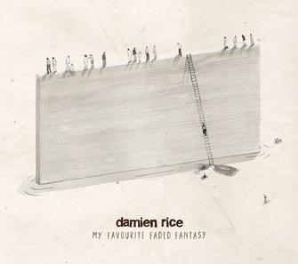
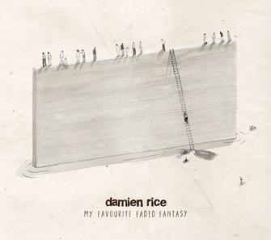

Below is a list of books that I have enjoyed.


Here you will find my bio and some of my interests.
As a current student of Ada's Developer's Academy, I'm learning the skills to become a fullstack developer.
Before becoming an Adie, I studied Biochemistry and Philosophy at Seattle Universtiy. While there, I did research projects on Modeling synergy in HIV prevention, Broad and Narrow Content in Mental State Meanings, and Interpretations of Kant's Critique of Pure Reason.
I spend my Saturdays volunteering with The Friends of the Seattle Public Library.
I currently live in Seattle with my partner and our cat, Silvio.

 
